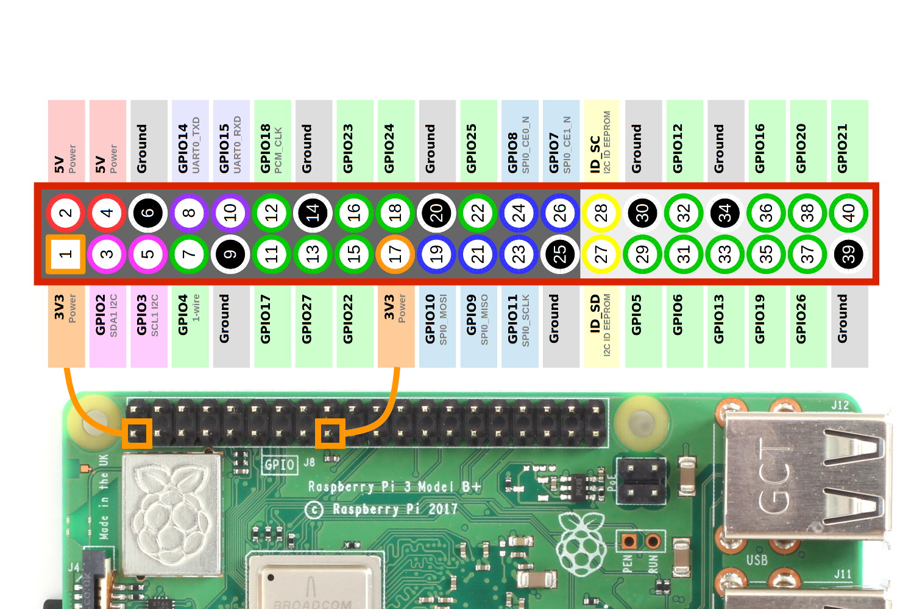
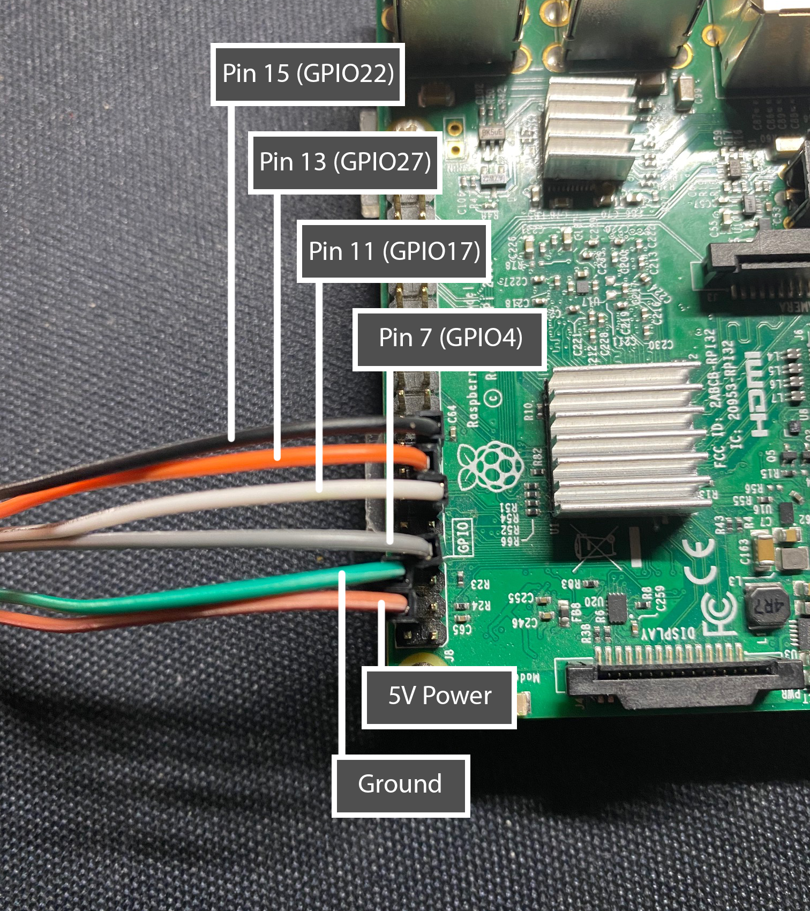
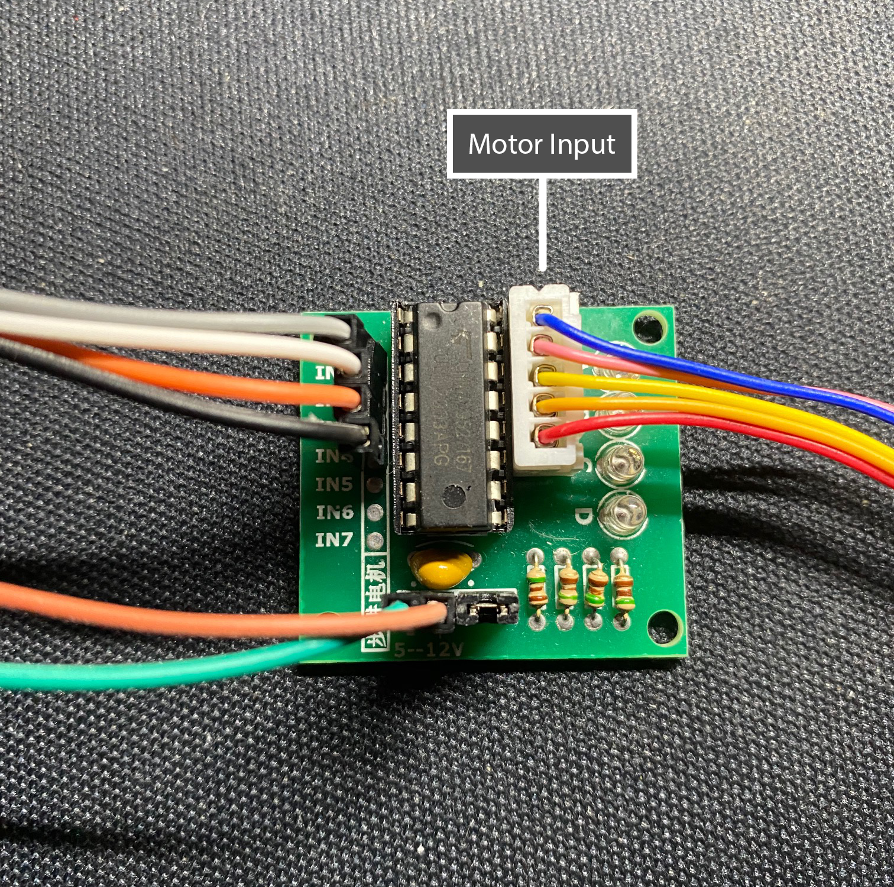

Web Controlled Motor Tutorial
Here you can find a way to control a motor remotely.
Introduction
The purpose of this tutorial is to display and inform readers the process of connecting a step motor to a raspberry pi and triggering that motor through web calls. This small project allows for basic automation to be introduced to almost any part of your life. I find this idea incredibility interesting and have included some applications below. Your creativity is your only restraint, as the possibilites are limitless.
Applications
Window Blinds Controller
Manual outdoor feeder
Goals
Operate a motor remotely
Components Required
Raspberry Pi Components
Motor & Connection Components
Ideally, you can purchase a kit which contains all the components, which may result in better savings and convenience. Additionally, if you are on a budget and don't mind long shipping times, these components can be found on AliExpress for very low prices.
Part 1 - Linux Operating System Installation
To begin the process, you must install a Linux operating system on the raspberry pi. For the purpose of this tutorial, we will be installing Raspbian. We can install this with the use the Raspberry Pi Imager. This program is an easy way to install Raspbian. Once you download the program, follow the instructions provided by the program to format your Micro SD card and boot up your Raspberry Pi. There will be some initial settings that you must configure.
Part 2 - Wiring the Raspberry Pi
This is where the fun begins. Each GPIO pin can be individually powered on. There are some pins that provide power and some that are ground, and others that provide specific communication protocols.

Figure 2: GPIO Pins, taken from https://www.raspberrypi-spy.co.uk/2012/06/simple-guide-to-the-rpi-gpio-header-and-pins/#prettyPhoto
Assuming you have all the required components, lets begin by attaching the ULM2003 Driver to the Raspberry Pi. Lets quickly go over the different components of the ULN2003 Driver board that we will be interacting with. Please make sure the Raspberry Pi is not connected to any power source during this section.

Figure 3: ULN2003 Driver Board Components
Lets begin by attaching one end of the female wires into the ULN2003 Driver Board. We will be attaching the jumper wires to the control inputs and power inputs following the format of...
IN1 -> Pin 7 (GPIO4)
IN2 -> Pin 11 (GPIO17)
IN3 -> Pin 13 (GPIO27)
IN4 -> Pin 15 (GPIO22)
Negative(-) -> Pin 6 (Ground)
Positive(+) -> Pin 4 (5V)

Figure 4: Insert female wires into the ULN2003 Driver Board
Now lets attach the other end of those jumper wires into the Raspberry Pi.

Figure 5: Insert female wires into the Raspberry Pi following the provided scheme.
Lastly, attach the 28BYJ-48 step motor input to the motor input. This concludes the wiring section.

Figure 6: Insert step motor connector into place